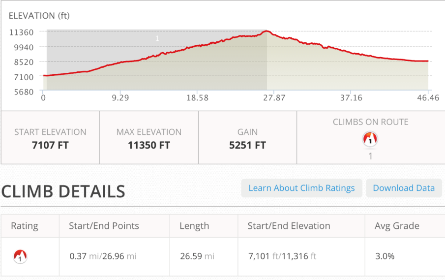
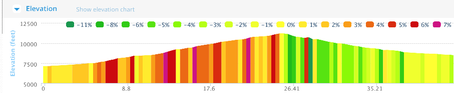
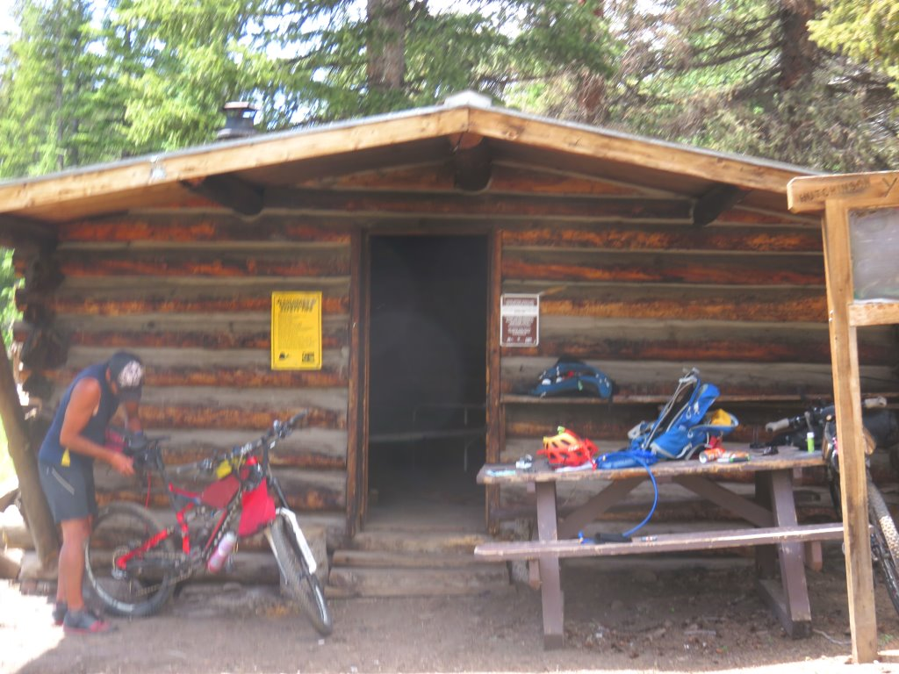
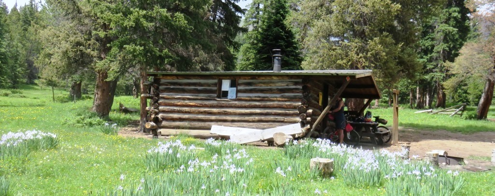
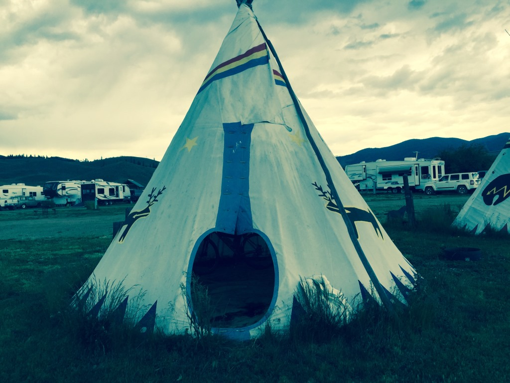

Morning climb and wind
Salida to Sargents over Marshall pass was a major challenge. We got off to a bad start because my riding partner was having bottom bracket issues so we stopped at a hardware store for some tools and they got delayed another hour about 2 miles away from our start when he stopped to take the whole mechanism apart. It wasn't until 9am we got started the 6 mile climb along US route 280. This road was heading totally into the wind and not the way I had expected to start the day. I got to the turnoff to to the gravel road heading up and faced a real dilemma. I seriously considered continuing on my way down US280 which appeared to parallel the mountains I was going to be riding thru for the next few days.


After some prodding from Andrew and a pep talk from myself (Thanks Tony) I decided to continue. The road to the pass was 12 miles but almost always ridable. The wind which had howled in my face on the first six miles was diffused as we switched back around the mountain. I had some large motorcycle groups go by which kked up some dirt.
Andrew reached the top a few minutes before me. At the top we met Rob who had gotten and earlier start because of our bike repairs. We had quite a nice celebration at the top of Marshall Pass , another Continental Divide crossing.
Rob continued on the original trail and had a really nice 13 mile ride down off the Marshall Pass. It was already about 1:30 in the afternoon and clouds were gathering on a number of the peaks around us. Instead of riding on to avoid the rain we decided to wait and see if the clouds would pass.
How to get down from Marshall Pass

Just before we had gotten to the pass we had seen signs for the Colorado Trail which more or less tracks the Divide. Andrew determined we might save 15 miles if we took the trail. I decided to give it a try. This was a big mistake. With rain treatening, we found a Colorado Trail cabin about a half mile from the pass and spent 90 minutes hanging out there.
Our afternoon break spot

Finally about 3pm we decided to try our "short-cut". As soon as I started riding I knew I was in over my head. The single track trail was steep and for me mostly unridable. I followed along for a while but lost contact with Andrew who had charged ahead. Realizing that my prime mission was returning safely from this trip I retraced my steps and went back to the pass. I had no regrets bombing the 13 gravel road into the small town of Sargents.
4th of July in a Teepee

Leaky Teepee - no door and pretty wet insideI caught up with Rob who was waiting at the restaurant/store/rv park for Eric, another rider who was somewhere up on the mountain.
I had only gone 46 miles on the day and was really disappointed. I could see rain was definitely coming in so I decided to call it a day. Shortly after this I got an email from Andrew who cautioned me that the single track didn't get any better.
I soon realized I had made the right decision and despite the short distance I traveled there weren't any places to stay for the next 50 miles or so.
The RV park had a shower and for an additional eight dollars I could upgrade from a patch of ground ($12) to a leaky teepee ($20). Seemed like a bargain.
Eventually Andrew turned up and once the rain started we realized how leaky the teepee was. Using various string, tape and cables we were able to fit three people and two bikes inside the teepee and keep them reasonably dry. The absense of my ground pad definitely hit home so I had a mostly sleepless but dry night in the teepee. The afternoon rain would become a daily occurance from here to Mexico.
Saturday, July 4 - 46 miles Salida to Sargents, CO
See full screen map To go places and do things that I've never done before– that’s what living is all about.Text by Jim O'Brien . Photographs by Jim O'BrienTD on Flickr.